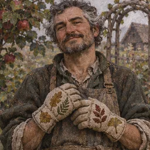
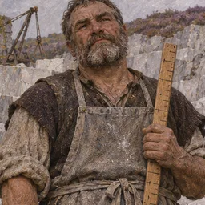
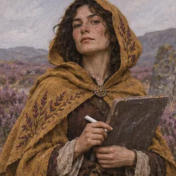
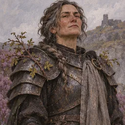

Вечер 1
Ворота, которые впускают дважды
Выбрать причину войти в аббатство, проверить место отступления и узнать, что его гостеприимство умеет удерживать вещи.
Открыть сценарий →Заброшенное аббатство укрылось шипами, которые помнят каждое нарушенное обещание. Когда серый ветер возвращается в долину, старый сад начинает охоту на уходящих, а проклятая рыцарь не может помочь им, не нарушив одну из своих клятв. Пройдите живой лабиринт, испытайте доверие делом и решите, что значит остаться верным человеку, когда невозможно остаться верным каждому слову.

Перед чтением вступления сверьте место героев, присутствующих людей и предметы с итогом прошлого вечера. Если условия встречи отпали, сыграйте последствия там, где находится партия. Событие по расписанию может произойти за кадром. Герои узнают о нём от тех, кто был на месте.
Покажите найденный обход на стороне героев. Дайте решить, остаётся ли кто-то у щита, пока остальные выходят. Седьмой вечер может начаться с разных сторон арки; никто не должен давать за Эльсену новую клятву.
Клятву сторожить сад не даём. Остаёмся у внешней арки и ставим там сухое место для пришедших. Встречаем пришедших под навесом у внешней арки. За аркой свободно выйти тем, кто уже дошёл; те, кто остался в саду, ещё держат свои обещания.
У свободной кружки и корня у пустой скамьи попросим проверить, что происходит при добровольном отказе от невыполнимой клятвы. Доступные свидетельства — Кружка свободного ухода, Корень у пустой скамьи. Илла помнит нарушенное обещание и помощь спутника. Свободные следы у скамей показывают, что люди могли уйти. Предлагаем одному желающему выйти под наблюдением стражи. Владелец сам меняет обещание, и отзывается связанный с ним участок. Остальные обязательства не исчезают вместе с первым.
Водоносцы вытеснили нас от чаши, вода и короткий проход потеряны. Даём выходящим сухое место и воду. Отходим к внешней арке и встречаем выходящих с другой стороны. В последнем карауле остаются добровольцы; сад не считается освобождённым.
Для игры без подготовки: что говорят люди, места в стороне от главной дороги и прохожие. Пометки о правде слухов — только для ведущего; сказанное за столом становится фактом мира, лишь когда вы его подтвердите.
«Шипы на обители спят и помнят каждое слово, что дали под её крышей. Скажешь там лишнее — оно и прорастёт».
Отчасти правда. Шипы держат не всякое слово, а только невыполнимое обещание, которое сам владелец всё ещё считает нерушимым. Случайная фраза героя клятвой не становится. Слух удобен в устах Рады или соседей, чтобы стол осторожнее говорил в саду.
«Скрылся под водой третий белый камень в ручье — жди паводка. Так у нас воду мерили ещё деды».
Правда. Местный обычай из описания долины. Подходит к первому и восьмому вечеру, когда ручей поднимается, и ничего не решает за героев.
«Шипы кормятся болью тех, кто застрял в обители. Потому и блестят так, будто их кто полирует».
Неправда. Ложь. Шипы не хранят душ и не питаются болью; блестят они от дождя и росы. Слух стоит развеять, если за столом есть подростки, которым страшно: обитель опасна выбором, а не муками.
«В ту бурю Садовник поднял изгородь, и все, кто стоял у стены, дожили до утра. Без него из нас никого бы не осталось».
Правда. Правда: двенадцать лет назад он спас взрослых путников. Слух объясняет, почему его обида имеет основание, но не делает его нынешнее требование оставить свидетеля законным.
«На верхней галерее стоит не человек, а призрак в доспехе. Глянешь ему в лицо — и сам останешься там навсегда».
Неправда. Суеверие. На галерее стоит Эльсена — живой рыцарь в проклятом доспехе; смотреть на неё безопасно, и говорить с ней можно. Слух хорош, чтобы показать, как мало соседи знают о её клятвах.
«Соседи обещали Садовнику вернуть цветники, да так и не вернули. Обманули, выходит, того, кто их спас».
Отчасти правда. Обещание правда не исполнено: камни и вода ушли на дома, люди разошлись по своим нуждам. Но это не умышленный обман, а забытое слово. Сив и Рада признают свою часть в пятом вечере и в гостевом доме.
«Под скальным навесом у внешней тропы сухо в любую бурю. Пастухи туда целые отары загоняют, и ни одна овца не мокнет».
Правда. Правда: это известное укрытие и законное направление отступления с первого вечера. Слух напоминает столу, что выход есть всегда.
«Кто выпьет из кружки на каменном столе во дворе, тот пообещал обители остаться».
Неправда. Неправда: за принятую кружку нет никакого скрытого обязательства. Отвар можно пить спокойно. Рада, услышав это, только фыркнет и нальёт ещё.
«Нижнюю лестницу под галереей разбило той бурей. С тех пор там обрыв, и ходить туда незачем».
Отчасти правда. Лестница и правда была разрушена — Торв снял ступени на подпорки гостевого дома. Но прошлой весной он вернул их светлым известняком, и путь цел. Так думает и Эльсена; проверить ступени можно во втором и шестом вечере.
«Чем теплее стены обители, тем тоньше наш ручей. Будто кто-то наверху греется нашей водой».
Правда. Это наблюдение Нерина, и оно верное: поток слабеет вместе с потеплением стен. Чинить источник при этом не нужно — вода и тепло задают цену пути, а не задачу на починку.
«В клуатре монахи вешали деревянные ложки у поворотов, чтобы к ужину найти трапезную. Ложки висят, а трапезную всё ищут».
Правда. Старый обычай из описания клуатра. Слух готовит стол к третьему вечеру: арки ходят, а сколы на камне и наружная стена стоят на месте.
Длинное корыто, выдолбленное в скале у дальней стены скального навеса. Вода в него сочится из трещины круглый год, даже в засуху, и пастухи никогда не берут её последними: по обычаю, сначала поят овец, потом пьют сами. На краю корыта лежит медный ковш на цепочке, отполированный сотнями ладоней. В бурю здесь сидят плотно, плечом к плечу, и рассказывают друг другу, кто где застал ветер.
Три широкие плахи, перекинутые через ручей с белыми камнями чуть ниже Нижних Ступеней. Перил нет, и через мостик ходят не спеша, глядя под ноги. На средней плахе вырезаны зарубки — по одной за каждый паводок, после которого мостик ставили заново. Местные говорят, что под ним водятся самые крупные раки в долине, но ловить их здесь не принято.
Низкий сарай на нижней террасе, где в больших чанах варят вереск на красильную нить. От чанов поднимается горький пар, а по стенам сохнут мотки пряжи всех оттенков тёмного — от дымчатого до угольного. Красильщицы работают в одинаковых фартуках, чёрных до локтей. По обычаю первую нить нового сезона не продают, а повязывают на калитку того дома, где этой зимой было тяжелее всего.
Высокая груда камней у дороги на самом перевале, куда каждый уходящий из долины кладёт по камешку. Камней столько, что груда выше человеческого роста. Возвращаясь, путник забирает чужой камешек и уносит вниз — значит, кто-то за него уже дошёл. В серый ветер к камню не поднимаются: с перевала первым тянет мокрым железом.
Самая крутая из лестниц Нижних Ступеней, сто с лишним выщербленных ступеней от ручья к верхним домам. Здесь носят воду тем, кому тяжело подниматься, и на каждой площадке стоит каменная тумба, чтобы поставить ведро и перевести дух. На тумбах мелом пишут, кому сегодня уже принесли. Если надписи нет до полудня, соседи идут проверить, всё ли в доме ладно.
Плотная женщина с руками, чёрными до локтей, и мотком тёмной пряжи на плече.
«Вереск красит на совесть: что раз окрасил, того уже не отстираешь».
Может рассказать: Знает, что чёрный вереск на террасах ложится плашмя за час до серого ветра, и замечает это раньше всех в долине.
Седой пастух в мокрой овчине, с длинным посохом и собакой, которая не отходит от его колена.
«Овца бури не боится. Овца боится, что её одну оставят».
Может рассказать: Двенадцать лет назад загнал отару под скальный навес и может рассказать, что там было сухо всю ночь.
Худая старушка с веретеном за поясом и клубком серой шерсти, который она мотает даже на ходу.
«Нить рвётся там, где её тянут в две стороны. Так и с обещаниями».
Может рассказать: Помнит, что двенадцать лет назад обитель перестала принимать жильцов в тот же год, когда поднялась изгородь.
Молодой мастер с восковыми пятнами на рукавах и связкой свечей, перекинутой через шею.
«Свеча светит до своего конца, не дальше. Кто обещает больше — тот не свечник».
Может рассказать: Знает, что у Рады с кухни обители был медный фонарь и что она одалживала его соседям только на одну ночь.
Широкоплечий плотник с рубанком в кожаной петле и стружкой, застрявшей в бороде.
«Доска держит, пока её не просят держать всё сразу».
Может рассказать: Помогал Торву прошлой весной подносить светлый известняк к нижней лестнице и видел новые ступени своими глазами.
8 сессий по 140 минут: 10 минут открытия или повтора, три сцены по 35 минут, перерыв 10 минут после второй сцены и завершение 15 минут. Подготовленные герои — уровень 3. Прочитайте первую сессию, выберите состав и передайте игрокам отдельную страницу героев.
В мастерской создайте или откройте свой черновик, выберите импорт пакета и укажите package.json либо нужный файл из variants. Проверьте сценарий и состав в предпросмотре; активацию подтверждает ведущий. Сюжетные развилки, часы давления и жанровые действия разрешаются ведущим — они не становятся автоматически сыгранными событиями.
Пакеты разных размеров используют первые N героев в порядке карточек. Дополнительные герои дают новые роли, но не обязательные ключи к истории. Выбор произвольного состава требует правки черновика и повторной проверки.
Мокрый камень, серебряные колючки, тепло чужой кружки и шаги невидимого преследователя. Страх атмосферный; надежда возникает, когда люди позволяют себе помощь и принимают цену честного выбора.
Выбрать причину войти в аббатство, проверить место отступления и узнать, что его гостеприимство умеет удерживать вещи.
Открыть сценарий →Пройти мокрую водосборню, выбрать переносимый груз и испытать конечную взаимную помощь на реальном препятствии.
Открыть сценарий →Найти устойчивый ориентир в живом лабиринте и получить самостоятельное объяснение освобождения клятвы через фреску.
Открыть сценарий →Выслушать независимое свидетельство Иллы, испытать помощь с ясным пределом и выбрать, что унести из слишком уютного убежища.
Открыть сценарий →Проверить освобождение малого обещания действием, встретить сознательного преследователя и понять цену его обиды без согласия на удержание гостей.
Открыть сценарий →Узнать три клятвы рыцаря, проверить нынешний путь вместо её старого страха и подготовить добровольный вариант общего перехода.
Открыть сценарий →Провести согласившихся уйти через меняющийся сад и разрешить выбранное личное столкновение клятв реальным поступком, сохранив возможность отступить.
Открыть сценарий →Довести фактический переход до выбранной остановки, сыграть одну посильную заботу о последствиях и дать каждому герою собственный открытый эпилог.
Открыть сценарий →Только для ведущего. Сюжетные повороты держатся на мелочах, замеченных заранее: посейте их в названные вечера, а раскрытие отдайте героям, если они догадались раньше.
Кажется, что старый сад просто испорчен: тропы путаются, вода течёт вверх, и всё это можно починить. На деле дорожки меняет Тихий Садовник, сознательно и по своей воле: он возвращает уходящих и требует, чтобы живой свидетель остался до полного восстановления сада.
У выхода из Дома чужой весны Садовник — или оставленная им табличка — называет условие прямо: пусть один останется свидетелем до полного восстановления сада, и весна в этих комнатах не кончится. Пусть стол сам свяжет это с вернувшимися дорожками, водоносами и плащами: сад не сломан, у него есть воля, и это воля держать. Срок назовите неопределённым, как он есть, и дайте каждому отказаться без броска.
Группа перестаёт искать поломку, которой нет. С преследователем можно говорить, спорить, обходить его по внешней стене или держать заслон, но отключить его нельзя — и никто не обязан становиться его залогом.
Преследователь кажется чудовищем, которое держит людей из злобы. На деле двенадцать лет назад он поднял изгородь и спас всех взрослых путников от серого ветра, а соседи обещали восстановить его цветники и не вернулись: вода, камни и тепло ушли на их дома. Его обида обоснована, хотя удерживать людей она его не оправдывает.
В Саду непринятых даров Садовник называет конкретный ущерб — снятый бортик, забытый зимний куст, непринесённые семена, — а Сив признаёт свою часть: «Воду в ту бурю отвёл я и обещал вернуться к цветникам». Рада уже говорила о тепле, Торв — о камнях. Сложите это вслух: каждый из соседей взял у сада что-то и обещал вернуть. Пусть стол почувствует, что у погони есть причина, и сам найдёт, где кончается долг и начинается удержание.
Победить Садовника больше не хочется — хочется честно ему ответить. Маленькая реальная помощь клумбе может остановить его на разговор, но не обязывает простить, а щит против него становится ценой, а не подвигом.
Кажется, что рыцаря на галерее держит чужое проклятие и освободить её можно, только сменив на посту — встав в её караул или найдя того, кто останется. На деле её держат три собственные клятвы, которые нельзя выполнить вместе; петля распускается только от её добровольного поступка, открыто нарушающего одну из них, без нового вечного должника.
На прямой вопрос Эльсена читает три клятвы: не выпустить гостя из защиты в бурю, не поднять оружия против Садовника, никому не передать тяжесть караула. Положите три полоски рядом и дайте столу самому увидеть, что погоня за уходящими делает их несовместимыми. Любой из найденных примеров — фреска, кружка или фонарь — показывает выход: нарушить одно слово поступком, а не сменить должника. Выбор остаётся за самой Эльсеной.
Финал перестаёт быть поиском замены: никто не встаёт в вечный караул. Группа готовит один из трёх честных способов — выход в дождь, заслон без убийства или конечную ношу — и оставляет решение рыцарю.

Женщина в плаще с аккуратно заштопанными локтями; на ремне висит деревянный половник.
Бывшая повариха обители пришла разогреть очаг для путников и забрать несколько медных котелков.
Дать пришедшим сухое место на эту ночь и вернуться домой с собственными вещами.
При первой встрече. «При обители у этого очага не спрашивали имени — спрашивали, сколько ложек ставить. Садитесь, я посчитаю».
О навесе. «Туда сад не дотягивается. В прошлую бурю пастухи загнали туда целую отару, и ни одна овца не намокла».
О котелках. «Их лудила моя наставница. Медь помнит руку, а не печь. Ящик разбейте, если нужно, котелки — не надо».
О Садовнике. «Я слышала его однажды, в ту бурю: он велел держаться у стены, пока растут шипы. Больше выдумывать не стану».
О своём обещании. «Двенадцать лет назад я просила его держать комнаты тёплыми, пока не уймётся непогода. Не подумала, что она может не кончиться».
Сиву. «Мне не нужен вечный фонарщик, Сив. Мне нужен мой фонарь и ты — живой и сухой».
В конце. «Дождь как дождь. Слышите? Обычный, мокрый, честный. Я по нему соскучилась».
Рада сама предложила в прежнюю бурю держать гостевые комнаты тёплыми до полного улучшения погоды. Теперь ей стыдно признать, что такого предела могло не наступить.
Не знает устройства источника, полного содержания фрески или мыслей Эльсены. Не обещает решение всей болезни сада.
Если её просят назвать точные слова просьбы без обвинительного допроса, она повторяет их. При грубости оставляет записку у очага, а вещи отдаёт через Иллу.

Худощавый человек с белой глиной на сапогах и складной чашей за поясом.
Носит воду для соседей, которым тяжело подниматься по лестницам, и отмечает уровень ручья на камне.
Вернуть устойчивый сток в Нижние Ступени, не заставляя жителей ежедневно просить милость у обители.
При первой встрече. «Вам воды или дороги? Воду налью, дорогу покажу. Сначала скажите, что нужнее».
О ручье. «Чем теплее стены обители, тем тоньше ручей. Я это не выдумал — каждый день мерю на камне».
О ступенях. «Вот эти крепкие. Кто-то укрепил их прошлой весной. Я хожу по ним с полными чашами».
О своей доле. «Могу отказаться от своей поливки на три дня. На три. Скажете „до лучших времён“ — не соглашусь».
О водоносах. «Поставьте им чашу под струю. Они носят воду, как я, только им не говорят кому».
Когда приходят в селение. «Кто дошёл и что вам нужно? Сначала вода и сухое, рассказы потом».
Об обычае. «После серого ветра у нас ставят чаши под капель. Чем умоешься в первое утро, тем и весь год».
Нерин готов отказаться от своей поливочной доли на несколько дней, но боится, что временная уступка снова станет бессрочной.
Не был внутри старой обители во время прежней бури; причины проклятия ему неизвестны. Его потребности не равны согласию всех соседей на новую клятву.
Показывает метки и безопасные ступени любому, кто приходит посмотреть. Личную уступку обсуждает лишь с указанным сроком; отсутствие согласия не скрывает улику.

Садовник с поседевшими висками и перчатками, на которых вышиты разные листья.
Возвращается в сад за семенами выносливых растений и проверяет, не перекрыли ли корни канаву.
Сохранить часть зимних цветов, но перестать удерживать ради них чужую воду.
При первой встрече. «Не наступайте на край — там зимние корни. Я пришёл за семенами, а не за неприятностями».
О фонаре. «Я сгоряча сказал при шипах: сам буду держать весь сад освещённым до конца бури. Шип услышал раньше, чем я договорил».
О воде. «Воду в ту бурю отвёл я и обещал вернуться к цветникам. Не вернулся. Это моё. За всю обитель отвечать не стану».
О Садовнике. «Он возвращает уходящих нарочно. Не по ошибке и не от старости. Ему нужен свидетель, и он это знает».
Признавая нарушение. «Я нарушаю это слово. Весь сад я не освещу. Вот, сказал — и ничего не рухнуло».
О семенах. «Посадим одно. Не обещая, что взойдёт. Я больше не даю цветам обещаний — я их просто сажаю».
Если от опыта отказались. «Спасибо. Я ещё не готов. Но я вас услышал, и это уже немало».
Он отвёл воду к защите в прежнюю бурю и обещал Садовнику восстановить цветники, но не вернулся вовремя. Сегодня он ещё и связал фонарь словами: «Сам буду держать весь сад освещённым до конца бури». Ему трудно признать, что это невозможно.
Не знает трёх клятв Эльсены. Не уверен заранее, освободится ли фонарь, если он признает нарушение собственного обещания; это предстоит проверить действием.
Признаёт отвод, когда герои показывают воду или спрашивают о его работе. Показывает желобину даже после спора; растение для опыта отдаёт без цены.

Швея с серебряным напёрстком на цепочке и дорожной сумкой из разноцветных лоскутов.
Забирает оставленные в гостевом доме покрывала и готова поделиться ими с замёрзшими путниками.
Выйти из обители своими ногами, не превращая благодарность за прежнее укрытие в обязанность остаться.
При первой встрече. «Покрывала мои — те, что с синей каймой. Остальные берите, если замёрзли. Я не считаю».
О комнате. «Я дважды собирала сумку и дважды садилась обратно. Не потому, что держат, — потому что легко».
О колене. «Колено у меня как старый замок: на ровном ходит, на мокрых плитах заедает. Опору попрошу сама».
О кружке. «Проводник сказал: я нарушаю это слово, помоги мне. Я подставила плечо. Вот и вся история».
О помощи. «Скажите вслух, где встанете передохнуть и когда отдадите ношу. Без этого помощь становится ещё одним обещанием».
О залоге. «Я не залог и не подарок. Если пойду, то своими ногами — и когда сама решу».
В конце. «Мы сели и отдохнули. Никто не стал новым стражем. Хорошая концовка, я бы её нацарапала».
Ей нравится безупречная весна гостевой комнаты; она боится, что спутники примут её колебание за неспособность решить самой.
Знает один лично пережитый случай освобождения обета. Не знает всех клятв рыцаря и не гарантирует исход сегодняшнего перехода. Сама выбирает, идти ли ей и нужна ли поддержка колену.
По просьбе о прежних выходах рассказывает весь случай независимо от готовности героев помогать ей. Если разговор труден, сама показывает рисунок и разрешает прочесть надпись.

Каменщик с низким голосом, в коротком фартуке и с деревянной мерной рейкой.
Проверяет опоры водосборни и предлагает переносные мостки вместо рискованных прыжков.
Открыть проход и не тратить единственные сухие доски на красивое, но недолговечное решение.
При первой встрече. «Не прыгайте. Здесь ничего не надо перепрыгивать — надо перекинуть доску и пройти».
О камнях. «Нижние камни лежат на старых жерновах, их и паводок не сдвинет. А галерея узкая — ящик там не развернёшь».
О снятых ступенях. «В ту бурю я снял отсюда ступени на подпорки. Весной вернул светлым известняком. Рассказать так и не собрался».
О досках. «Сухих досок мало. Красивый мост из них сделать можно, только простоит он до первой воды. Я бы не стал».
Эльсене. «Это мои камни, рыцарь. Я снял их и вернул. Стоят крепче старых — проверьте сами».
О советах. «Я говорю, как сделал бы сам. Решать вам. Мой шест одинаково проверяет любой совет».
В прежнюю бурю он снял часть ступеней нижней тропы ради подпорки гостевого дома; ступени восстановлены позже. Сам он рыцарю об этом ещё не рассказывал.
Не распознаёт магические обещания по виду и не может поручиться за будущую погоду. Его практический совет не становится обязательной командой героям.
Показывает исправленную ступень и поясняет её происхождение при осмотре. О снятых камнях говорит, если спрашивают, почему старые и новые ступени различаются.

Переписчица в тёмно-жёлтом капюшоне, с дощечкой и мелом вместо дорогих чернил.
Копирует изображения со стены, пока сырость не стёрла их, и делится дощечкой с посетителями.
Унести понятный рассказ о прежних путниках, не выламывая стену ради её сохранения.
При первой встрече. «Осторожно, не задевайте стену плечом: краска сырая, и каждое касание что-то стирает».
О лабиринте. «Сначала я считала, как учили: дверь, арка, дверь. Потом заметила, что арки ходят за мной, а стена стоит».
О ложках. «Монахи вешали ложки у поворотов, чтобы найти трапезную. Ложки висят до сих пор, а трапезная каждый раз на новом месте».
Об ошибке. «Я рисовала при закрытой створке и подписала картину как вечную клятву. Выходит, переписала только половину истории».
О стёртой строке. «Под рисунком есть стёртая строка. Я так и не смогла её прочесть. Может, при боковом свете получится».
О свидетельстве. «Слова тоже свидетельство, если они точные. Копия хороша, но память иногда надёжнее мела».
Первую копию она сделала с закрытой последней створкой фрески и подписала картину как принесение вечной клятвы. Она готова сверить копию с полностью открытой фреской.
Не присутствовала при изображённом событии, не знает весь принцип проклятия до осмотра и не знает чужих секретов. Подпись копии ошибочна, но Дея узнаёт это только после проверки фрески.
Сразу даёт осмотреть стену и сверить копию. Ошибку признаёт после открытия створки; отсутствие извинения со стороны героев не блокирует чтение.

Рыцарь в потемневшем доспехе, с веточками на наплечниках и длинным серым полотнищем вместо герба.
Стережёт высокий проход и предупреждает о ветре. Садовые лозы следуют за ней, словно несут край невидимого плаща.
Вывести желающих и перестать быть вечным стражем, не превращая прежнего спасителя в простую мишень и не навязывая свой долг другому.
При первой встрече. «Кто из вас хочет выйти? Каждый за себя. Молчание я не считаю согласием остаться».
О клятвах. «Не выпущу гостя из моей защиты в бурю. Не подниму оружия против Садовника. Никто не понесёт тяжесть моего караула».
О Садовнике. «Двенадцать лет назад он поднял изгородь, и все, кто стоял у этой стены, дожили до утра. Я этого не забуду».
О страхе. «Если я выпущу вас в дождь и кто-то сорвётся с мокрого камня, это будет моё слово, нарушенное зря. Вот чего я боюсь».
О поступках. «Скажите, что вы сделаете сейчас, а не что пообещаете потом. Обещаний на этой стене и так слишком много».
Выбирая. «Всё сдержать я не смогу. Я выбираю, какое слово нарушить, и отвечу за это сама».
В конце. «Двенадцать лет я смотрела на этот камень сверху. А он тёплый от рук».
Три её обещания несовместимы: не выпустить гостя из защиты в бурю; не поднять оружия против Садовника; никому не передать тяжесть караула. Она признаёт слова, но боится выбрать одно открытое нарушение.
Не знает о ремонте нижней тропы и частных опытах героев, пока ей не расскажут. Не знает будущих решений Садовника. Ни один бросок не заставляет её нарушить клятву.
Повторяет три клятвы на прямой вопрос. Рассказ о проверенном освобождении шипа или предложенная конечная помощь позволяют обсудить нарушение; согласие остаётся её собственным решением.

Высокая деревянная фигура с гладкой садовой маской; на ладонях лежат сухие семена.
Смотрит на посетителей из-за корней и спрашивает, кто останется свидетелем его труда. Предлагает тёплую комнату тем, кто вернётся с дороги.
Получить признание своей прежней помощи и восстановление сада, чтобы его снова не оставили с чужими обещаниями.
При первой встрече. «Вы ещё не увидели, сколько я для вас вырастил. Останьтесь — и увидите».
О клумбе. «Здесь росли зимние астры, три ряда. Люди брали воду, брали камни, брали тепло. Почему вы всегда берёте нужное и исчезаете?»
О своём условии. «Пусть один останется и посмотрит, как сад встанет заново. Тогда весна в этих комнатах не кончится».
О сроках. «Я слышал сроки. Они кончаются раньше, чем начинаются. Назовите такой, который кончится вовремя».
У пустых скамей. «Я сохранил вам место. Кто сохранит место мне? Я спрашиваю двенадцать лет».
Видя помощь. «Один куст. Хорошо. Я видел. Это не всё, что мне должны, но я видел».
В погоне. «Я вижу ваши следы. Я всегда видел, куда уходят. Люди возвращаются туда, где их ждали».
Он сознательно охотится на уходящих, меняет тропы и посылает плетёные подобия. Считает живого гостя залогом возвращения людей; понимает, что это удержание, но ставит свою обиду выше их свободы.
Не видит сквозь стены, не знает чужих мыслей, разговоров вдали и будущего. При потере следа ищет у последнего замеченного поворота; внешняя каменная тропа не подчиняется его корням.
Назвав конкретную разрушенную клумбу, он объясняет причину обиды и требование остаться. Честное признание вреда и начатая помощь могут остановить его на разговор, но не обязывают простить или отпустить всех.
Долина спускается к перевалу каменными террасами, на которых растёт чёрный вереск: его стригут на подстилку и на красильную нить. По дну бежит ручей с белыми камнями, и по ним здесь меряют воду: скрылся третий камень — жди паводка. У внешней тропы под нависающей скалой есть сухое просторное убежище, куда пастухи в бурю загоняют овец.
Широкий мощёный двор у главных ворот, где когда-то кормили всякого, кто постучит. Ряды пустых скамей стоят лицом к очагу, на каменном столе греется кружка, и никто не помнит, кто её наливает. Внешняя калитка видна от любой скамьи; у стены сложены длинные шесты, которыми прощупывают дорожку перед первым шагом.
Селение на каменных уступах ниже обители: дома стоят друг над другом, и крыша одного служит двором другому. Перед каждой дверью — пустая поливочная чаша; прежде в них сбегала вода из монастырского стока, теперь ручей мелеет. На общей площадке сушатся плащи, а воду соседям, которым тяжело подниматься, носят вёдрами по крутым лестницам.
Зал старой мельницы, где когда-то мололи зерно на всю обитель. Колесо давно стоит, а влажные корни проросли сквозь своды и держат над головой глиняные чаши, полные воды. Пахнет илом и сырой корой, где-то наверху журчит невидимый поток. Под чашами тянется низкая каменная галерея с боковыми нишами, в которых можно переждать, не замочив ног.
Квадратная крытая галерея вокруг газона, на котором стоят мраморные стулья, будто монахи вышли на минуту и не вернулись. Арки одинаковые, но у каждой свой скол на камне. На ветру постукивают подвешенные деревянные ложки: по старому обычаю гость вешал ложку у поворота, чтобы к ужину найти дорогу обратно к трапезной.
Здесь переписывали книги и сушили страницы, промокшие в дороге, — отсюда и название. Полки пусты, пахнет мелом и старым клеем. На стене сохранились цветные изображения путников; краска местами вздулась от сырости, а одну часть закрывает деревянная створка. Низкие окна выходят на сад, у двери стоят деревянные щиты, на которых когда-то носили книги и вещи.
Гостевой дом обители, где путникам давали ночлег. В комнатах тепло, как в мае, и в простых кувшинах цветут яблоневые ветви, хотя за стенами льёт холодный дождь. На столах стоят разные кружки, ни одна не похожа на другую. Вдоль стены тянется полка для обуви: по обычаю гость ставил башмаки носами к двери, чтобы утром не забыть, что ему ещё идти дальше.
Старый сад обители, где монахи растили лекарственные травы и зимние цветы. Тропы из белого песка петляют между тёмными арками шиповника; песок чисто выметен, хотя садовников здесь давно нет. Пахнет мокрой землёй и воском. На низком столике у входа лежат фонарь, глиняные миски и садовые рукавицы, будто кто-то только что отложил работу.
Длинный переход по гребню стены под открытым небом. Ветер свистит в щелях каменных щитов, поставленных стоймя, как ставни. Отсюда видны источник, внешняя тропа и скальный навес, а в ясную погоду — крыши Нижних Ступеней. Дозорные обители следили отсюда за перевалом, и на парапете до сих пор видны зарубки, по одной на каждую ночь караула.
Под бывшей часовней корни сплелись в высокий свод, похожий на рёбра перевёрнутой лодки. Здесь сухо и тихо, пахнет древесной смолой и пылью. Посреди пола стоят три обычные скамьи, такие же, как во дворе паломников; свет пробивается через пустую нишу окна, где когда-то был цветной витраж.
Условия: Если Эльсена сама разрешила желающему выйти за пределы её защиты во время сыгранной бури и затем пошла рядом как спутница; группа действительно прошла проверенный участок.
Защитная клятва нарушена, и её петля может распуститься. Рыцарь снова способна покинуть караул. Садовник остаётся в обители, если не согласился иначе.
Цена: Эльсена больше не обещает полной безопасности; нужно принять мокрую дорогу, потерю части груза и возможное недоверие прежних гостей. Последствия погоды разрешаются по сыгранному переходу.
Дождь в долине обычный: мокрый, холодный, честный. Эльсена стоит под ним без шлема, и вода стекает по потемневшему доспеху, смывая сухие листья с наплечников. Веточки опали ещё на тропе, и она не стала их подбирать. Она больше не обещает, что никто не промокнет, — и впервые за двенадцать лет идёт рядом, а не впереди. Часть груза осталась за шипами, и кое-кто из прежних гостей смотрит на неё с недоверием: та, что не выпускала, сама вывела их в бурю. Она не спорит. Рада ставит котелок на огонь под скальным навесом, Илла сушит покрывала, Нерин приносит воды. Садовник остаётся в обители: его сад стоит, как стоял, и тропы в нём меняются по его воле. Может быть, кто-то вернётся к нему с семенами. Может быть, нет. Эльсена смотрит на мокрую долину и говорит: «Отсюда всё ниже, чем казалось. И ближе». Свобода не вернула ей прежней уверенности. Зато вернула дорогу.
Условия: Если Эльсена добровольно преградила Садовнику путь оружием, нарушив запрет выступать против спасителя, а группа вывела желающих или остановила преследование без убийства.
Петля благодарности может лопнуть. Спасённые получают путь, а рыцарь сохраняет право помнить добро духа, не позволяя ему удерживать людей.
Цена: Прежняя дружба разорвана; Садовник может закрыть гостеприимный сад для Эльсены. Примирение останется будущей работой, а часть вещей придётся оставить.
Щит Эльсены висит на гвозде у очага Рады, и на нём видны свежие царапины от лоз. Садовник больше не зовёт её к своему огню: гостеприимный сад для неё закрыт, и, может быть, навсегда. Она помнит изгородь, поднятую в ту бурю, и помнит, как подняла против неё щит. Обе памяти живут в ней рядом и не отменяют друг друга. Спасённые ушли, часть вещей осталась за шипами, и никто не делает вид, что это мелочь. Илла шьёт новый ремень для щита и не спрашивает, зачем он теперь. Сив, если он здесь, рассказывает, что Садовник ещё долго стоял у края сада и не преследовал. Примирение остаётся работой на будущее: семена, клумба, скамья, может быть, слова. Эльсена не знает, придёт ли она к нему снова. «Я была ему благодарна двенадцать лет, — говорит она. — И буду. Только благодарность больше не держит людей за руки». За окном капает обычный мокрый дождь.
Условия: Если Эльсена попросила и приняла добровольную помощь на конкретный участок, нарушив обещание не делить тяжесть, и спутники вместе завершили этот переход.
Личная петля одиночества может распуститься. Никто не становится новым вечным стражем; после согласованной остановки любой вправе отдать ношу или уйти.
Цена: Переход медленнее: нужны отдых, совместное несение навеса или груза и отказ от части вещей. Эльсена теряет образ безупречного одинокого защитника, но получает спутников.
У последней скамьи все остановились, как договаривались, и ноша кончилась там, где обещали. Никто не стал новым стражем. Эльсена сидит рядом с Иллой, сняв шлем, и растирает плечо, на котором двенадцать лет лежал караул, а теперь лежит только усталость. Переход был медленным: отдыхи, смены, навес, который несли вчетвером, вещи, оставленные по дороге с лентами на ручках. Образ безупречного одинокого защитника остался на галерее вместе с серым полотнищем. Вместо него у Эльсены есть спутники — и право попросить снова, когда понадобится. Она ещё учится произносить это слово, и с каждым разом оно даётся ей чуть легче. Рада ставит котелок, Нерин приносит воды, Торв проверяет, крепко ли стоит скамья. Садовник остаётся в обители; его обида не исчезла, и сад по-прежнему ждёт заботы. Илла, глядя на свою кружку, говорит: «Вот теперь можно нацарапать ещё одну картинку. Много людей на одной скамье». Эльсена смеётся — коротко, неумело, впервые за долгие годы.
Условия: Если группа ушла по найденному обходу, а Эльсена отказалась нарушить клятву, либо испытание было прекращено ради немедленного отступления.
Согласившиеся уйти достигают скального навеса, если группа прошла доступный путь. Проклятие рыцаря остаётся нерешённым; сохранённые свидетельства позволяют вернуться.
Цена: Часть груза и внутренних дорог остаётся за шипами. Этот исход не называется исцелением; никто не погибает автоматически ради незавершённого дела.
Скальный навес принял всех, кто согласился уйти, — мокрых, усталых, живых. За внешней аркой остались часть груза, внутренние дороги и рыцарь в потемневшем доспехе: Эльсена не нарушила клятв, и её караул продолжается. Это не исцеление, и никто его так не называет. Рада сушит у огня то, что удалось вынести, Илла растирает колено, Нерин делится водой. Сохранённые свидетельства — фреска, кружка, рассказ о фонаре — лежат в памяти и в сумках, и с ними можно вернуться. Эльсена знает о них и может когда-нибудь решиться сама. Садовник по-прежнему ждёт свидетеля и меняет тропы; его обида не стала меньше оттого, что люди ушли. Никто не погиб ради незавершённого дела, и никто не остался в залог. Где-то наверху, под серым полотнищем, рыцарь смотрит на выход, который всегда кажется слишком далёким. Внизу, у огня, кто-то говорит: «Мы вернёмся. Не обещаю когда. Просто вернёмся». И впервые в этой долине такие слова не прорастают шипом.
Авторская подготовка и техническая проверка не заменяют живую игру. Длительность, сложность и эмоциональное восприятие пока не проверены группой. Картину первой встречи можно открыть отдельно. Тактические схемы построены из данных встреч. Полный каталог содержит материалы ведущего — публиковать его целиком для игроков нельзя.